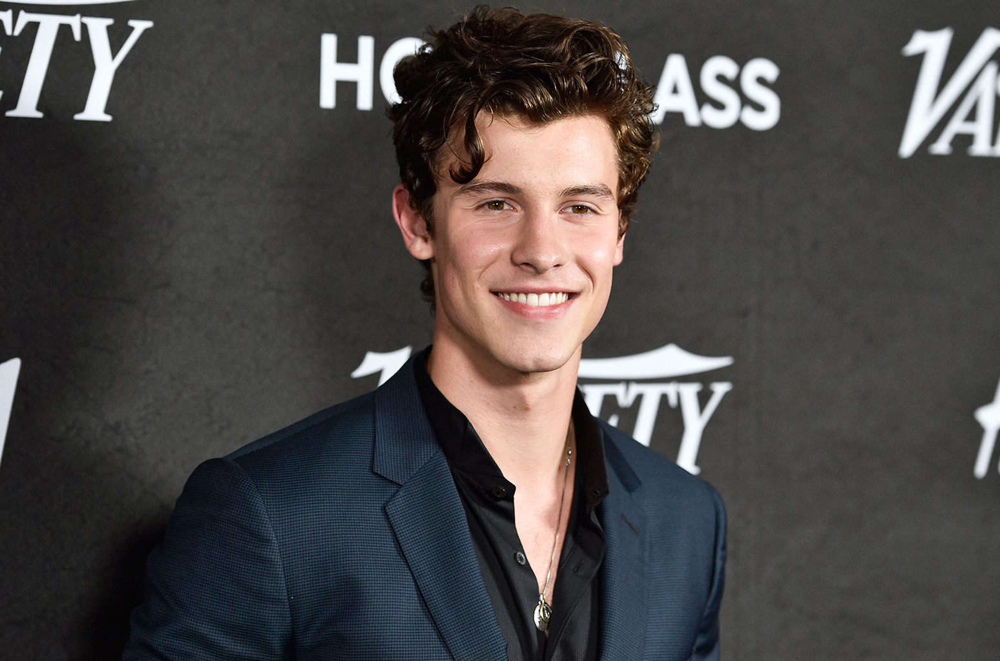
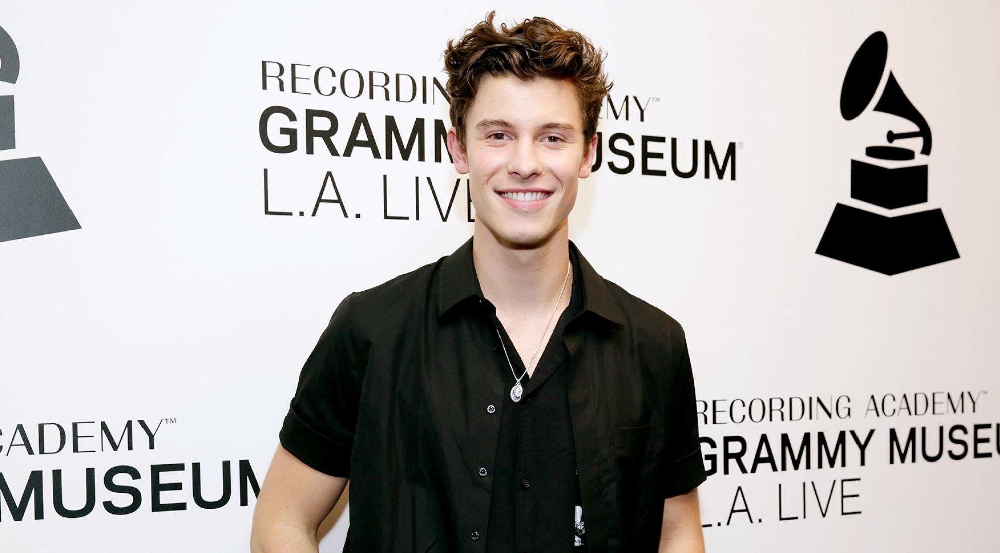
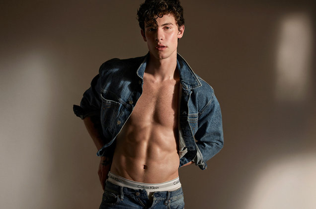

Shawn Mendes was born in Toronto, Canada on August 8th of 1998. He is a Canadian singer, songwriter, and model.
He gained fame by posting 6-second videos when he was 14 years old in an application known as Vine. With Vine, he caught the attention of Andrew Gentler, and American talent manager.
After a couple of years, he released his first single called “Life of the Party,“ which made him the youngest artist with a debut single in the Top 25.
Life of the Party
His music became so famous that he received two Grammy award nominations.
  
Shawn Mendes' Fun Facts
How old is he?
Ed Sheeran may be one of Shawn's biggest influences, but Ed is also a fan of Shawn. Ed flew him out to L.A. one night for dinner. What a lad!